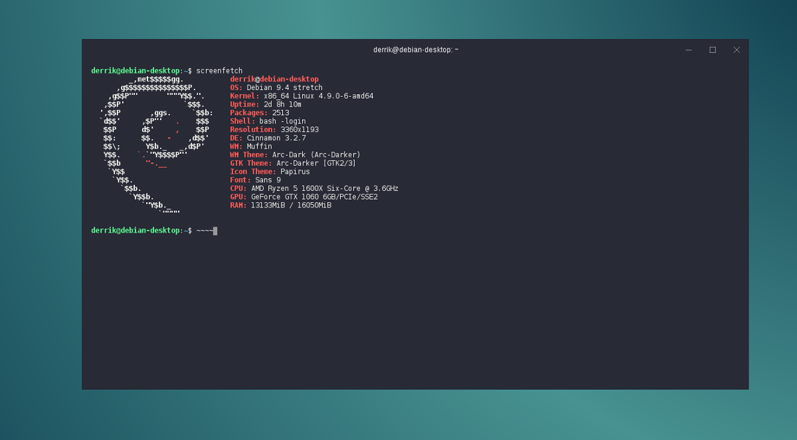

Linux
Debian Web Terminal
The Debian Project is an association of individuals who have made common cause to create a free operating system. This operating system that we have created is called Debian.
Debian
Of course, the thing that people want is application software: programs to help them get what they want to do done, from editing documents to running a business to playing games to writing more software. Debian comes with over 59000 packages.
